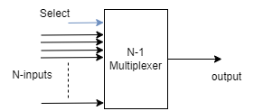
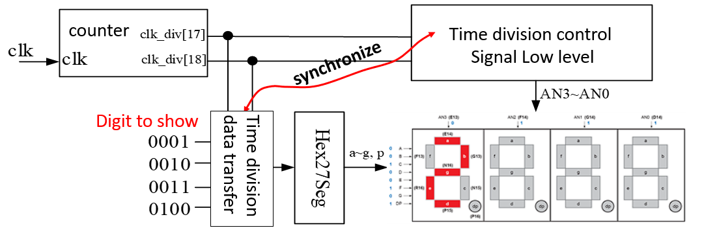
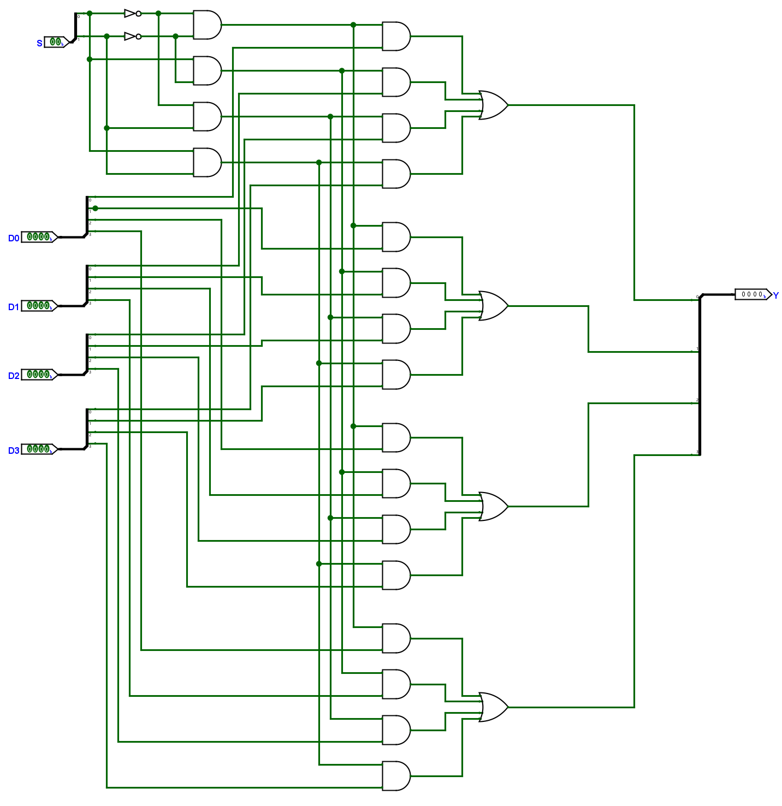
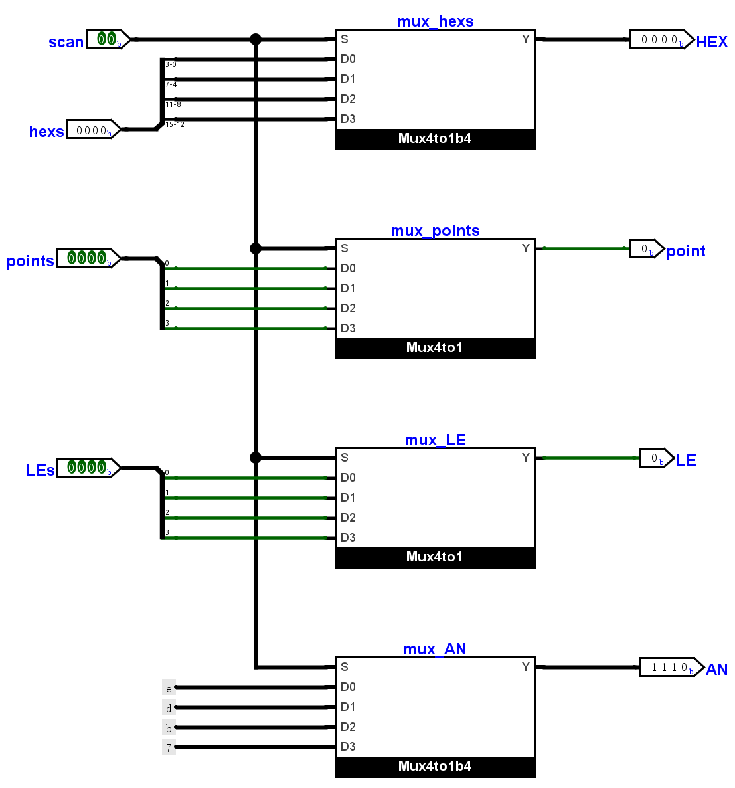
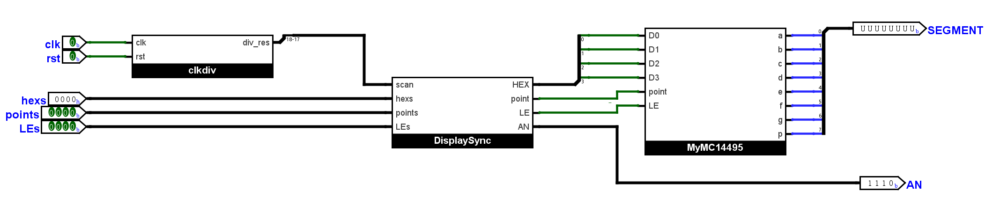

多路选择器
请注意
从本次实验开始，要求必须画原理图的部分会特别说明，其他实验均可直接使用 Verilog 完成。
实验背景
多路选择器
多路选择器（Multiplexer，简称 MUX）是组合逻辑部件，用于在多个输入信号中选择一个进行输出。它有多个数据输入端，一组选择信号以及一个数据输出端。

以 4-1 多路选择器为例，数据输入端口 D0, D1, D2, D3，选择信号 S0, S1，数据输出端口 Y。当 S1S0 分别为 0, 1, 2, 3 时，数据输出端口将分别输出 D0, D1, D2, D3 的值。
时钟分频
时钟分频可从一个时钟源获得多个不同频率的时钟信号，一些常见的硬件时钟分频方法：
- 二分频：将输入时钟信号的频率减半。可以通过一个触发器实现，每个上升沿（或下降沿）产生一个输出时钟脉冲。
- N 分频：将输入时钟信号的频率除以 N。可以通过计数器和用于重置的逻辑电路实现，计数器在每次时钟周期递增直到 N-1，重置归零并产生一个输出时钟脉冲。
- 锁相环 (Phase-Locked Loop, PLL)：可以通过比较输入时钟信号和内部参考时钟信号的相位差来控制输出时钟信号的频率。
四位七段数码管动态显示
在之前的实验中，我们提到因为 Arduino 上四个七段数码管共用管脚，因此同一时间只能显示相同的数字。一个可行的方式是利用视觉暂留效应，使用扫描的逻辑，每次只亮起一个数码管并显示对应数字，四个数码管循环显示。当每一个数码管的数字显示频率至少达到 10 次 / 秒时，我们会认为这四个七段数码管在“同时”显示了四个不同的数字。
利用多路选择器可以实现“扫描”，扫描的本质是周期性地选择出合适的打印数字和相应的使能信号，将四个十六进制数字输入作为 4-1 多路选择器的数据输入，将时钟分频器输出的某两位连续信号作为选择信号，即可周期性的选择出要打印的数字。四个七段数码管的使能信号也可以用多路选择器选择出来，每次选择出一个数码管进行显示。系统示意图如下：

需要注意使能信号的选择和输出数字的选择要同步，否则打印数字的位置和数值可能会与预期不符。
多路选择器的实现
一位 4-1 多路选择器
必须使用原理图完成
模块 Mux4to1 必须使用原理图完成
可以参考下图完成 Mux4to1 模块的设计，请注意修改电路名并确保端口名与图相同（选择信号 S

四位 4-1 多路选择器
将一位多路选择器拓展为四位时，可以重用地址选择的信号（即原理图中的 2-4 译码器部分
如果希望通过原理图实现，可以参考下图：
原理图

实现后，请自行书写仿真代码，在 Vivado 中进行仿真。
时钟分频
实现一个简单的时钟分频器，其输出在每个时钟信号上升沿自增。复位信号为同步复位，当时钟信号的正边沿到来且复位信号为有效时（本实验中复位信号为高电平有效）进行复位。clkdiv 模块代码如下：
简单应用
使用多路选择器和一些模块实现四位七段数码管动态显示，并实现一个“计分板”。
计分模块 CreateNumber
这里直接提供 CreateNumber 模块的 Verilog 代码：
CreateNumber.v
“计分板”应用
如果你还不清楚“扫描”的含义，请查看背景介绍。
本节目的是实现一个“计分板”应用，它将用到之前小节实现的模块以及即将实现的动态扫描模块。
DisplaySync 模块
本模块为动态扫描模块的子模块，起作用在于实现数字与使能信号的选择逻辑，模块定义为：
原理图如下，图中实例名仅为展示方便，确保修改电路名和端口名一致即可。实例 mux_AN 的四个输入 D0~D3 分别输入常数 0b1110, 0b1101, 0b1011, 0b0111，使用原理图实现的同学可以在 Wiring 中找到 Constant 元件。
原理图

DisplayNumber 模块
动态扫描模块，需要使用之前完成的 clkdiv, DisplaySync, MyMC14495 模块。
使用时钟分频器获得合适的扫描信号，这里我们选用 clkdiv[18:17] 两位信号。使用刚刚编写完成的 DisplaySync 模块选择合适的数字和使能信号，并将四位数字和小数点控制信号输出到 MyMC14495 模块实例中得到七段信息。
模块定义如下：
需要注意的是，clkdiv 子模块是使用 Verilog 编写的，不能直接导入到 Logisim 中，如果你仍然希望通过原理图的方式完成实验，请自行在 Logisim 工程中添加电路 clkdiv 并在电路中给出端口 clk, rst, clkdiv[31:0]，不需要做其他连接，在完成导出后，将导出文件中的 verilog/circuit/clkdiv.v 中的内容替换为之前小节的代码即可。如果希望使用其他 Logisim 工程中的电路，可以选择 File - Merge 将其他工程中的电路拷贝到当前工程下。下图为原理图：

顶层模块
作为顶层模块，将使用之前完成的所有模块作为子模块。实现一个“计分板”应用，在 Arduino 上七段数码管查看数字结果，使用开关控制亮灭与小数点，使用四个按钮为数字实现自增。
顶层模块代码如下：
top.v
可以使用提供的约束文件，获得 bitstream 并下载到板子上。因为我们并没有将 btn 信号进行去抖动处理，所以按钮按下时数字增长很多是正常的。
实验报告要求
多路选择器的实现
- 模块
Mux4to1的原理图截图。 - 模块
Mux4to1b4的 Verilog 代码或原理图（使用原理图实现的同学请提交原理图截图） 。 - 模块
Mux4to1b4的仿真代码，波形截图及对波形的解释。
简单应用
- 模块
DisplaySync的 Verilog 代码或原理图。 - 模块
DisplayNumber的 Verilog 代码或原理图。 - 下板实验的图片。
思考题
- 在实现
DisplayNumber模块时，我们将时钟分频器输出div_res[18:17]作为扫描信号，请问div_res[18]的时钟频率与时钟分频器输入clk的时钟频率的比例关系为何？如果希望扫描的频率减慢为之前的 1/4 倍（频率从 f 变为 f/4） ，应选择div_res的哪几位作为扫描信号？ -
在实验背景中我们提到“需要注意使能信号的选择和输出数字的选择要同步，否则打印数字的位置和数值可能会与预期不符
。 ”请对这个错误情况进行分析：使用分频器输出
div_res[18:17]作为输出数字的多路选择器的选择信号，使用分频器输出div_res[17:16]作为输出使能信号的多路选择器的选择信号。你可以使用一个简单的例子进行说明，比如画出这个错误的扫描过程中输出数字和使能信号的变化。